Materials for School Newsletters
学校だよりに、
安心して使える絵を。
School Stockは、現場の教員がつくっている無料の教材・素材の棚です。イラストも図版も写真も、出どころはすべてこの棚の中にあります。利用のきまりは1ページだけ。学校だよりにも、学校ホームページにも、そのまま使えます。
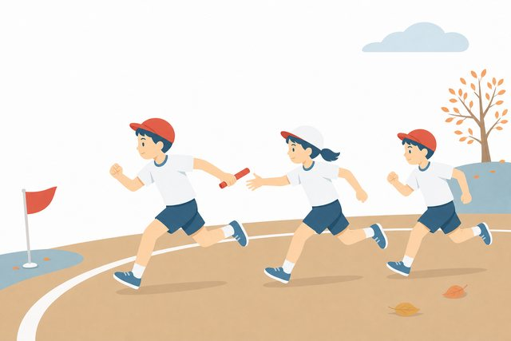
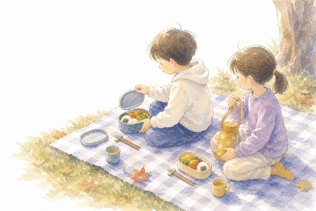
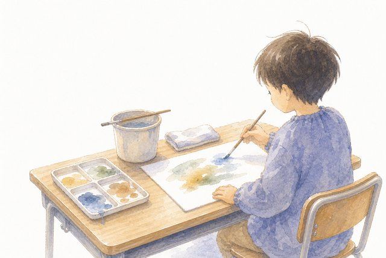
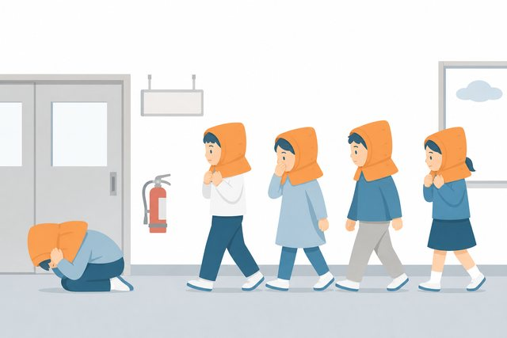
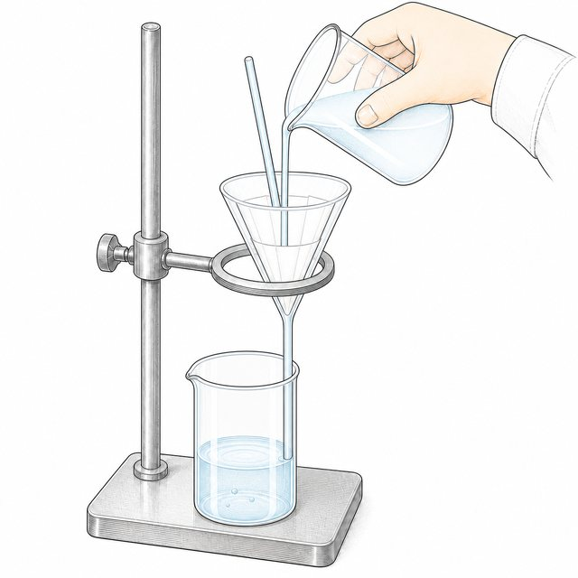
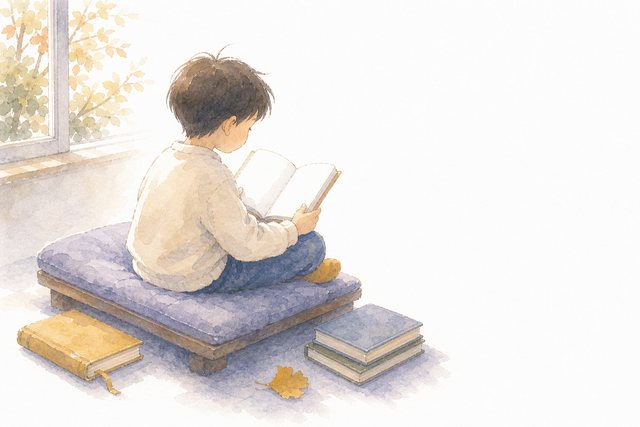
見本はすべて公開中の素材棚から。行事・教科・理科図版・体育・地域学習まで、学校で使う場面から作っています。
Facts
その1枚は、どこから来た絵ですか。
３５条は
授業の中だけ
著作権法が学校に認める特例は「授業の過程」に限られます。学校だより・学級通信・ホームページへの掲載は対象外で、ふだんの授業の感覚のままでは使えません。
出典: 改正著作権法第35条運用指針先生方の落ち度というより、規約を読み比べる時間が学校にない、というのが実情だと思っています。だからこそ、読み比べなくていい棚を用意しました。
Why
なぜ、まじめな学校で起きるのか。
無料サイトの規約は、サイトごとに違う
同じ「無料」でも、商用は21点まで、施設の中の利用だけ、ホームページは不可など、条件はさまざまです。おたよりを作るたびに読み比べるのは現実的ではありません。
「教育利用OK」と「学校だよりOK」は別もの
授業で使ってよいとされる素材でも、保護者向けのおたよりやホームページへの掲載は、別の条件になっていることがあります。ここが一番の落とし穴です。
検索で見つけた画像は、出どころが分からない
画像検索の結果には、有料素材も個人の作品も混ざって表示されます。フリー素材のつもりで使ってしまった事例が、各地で続いています。
Our Promise
School Stockの4つの約束。
利用のきまりは1ページ
学校だより、学級通信、学校ホームページへの掲載、校内研修の資料。使ってよい場面を、学校の言葉で先に書いてあります。稟議や職員会議にそのまま出せる分量です。
イラストは全点モノクロ版つき
おたよりの最後は職員室の印刷機です。白黒で刷っても潰れないよう、カラーとモノクロを最初からセットで置いています。
出どころを隠しません
誰が、どんな工程で作った素材か。生成AIを使った工程も含めて明らかにしています。「どこから来た絵か分からない」を、この棚ではなくします。
ぜんぶ無料です
学校の教育活動のための棚です。会員登録も、ダウンロード回数の制限もありません。
カラーとモノクロ、同じ絵で揃えています
Shelf
いまの棚と、これからの棚。
教科書の学習場面に合わせた図版から、行事のカットまで。すべて学校で使う場面から逆算して作っています。2026年7月現在、800点以上を公開中です。
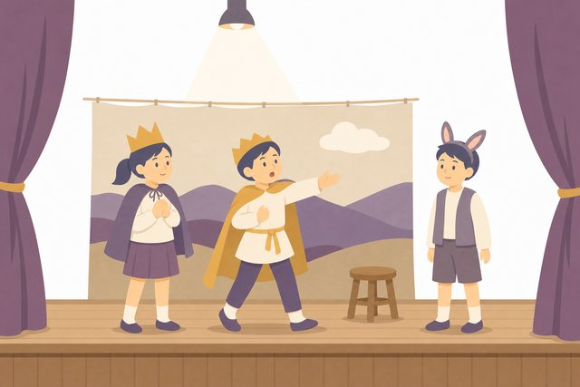
行事・学校生活
運動会、遠足、避難訓練、給食当番。学校だよりの定番場面。
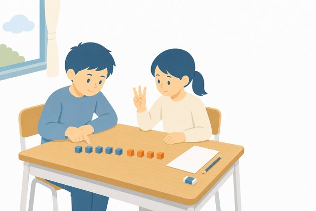
教科の挿絵
国語の音読から図工の絵の具まで、授業の場面を教科別に。
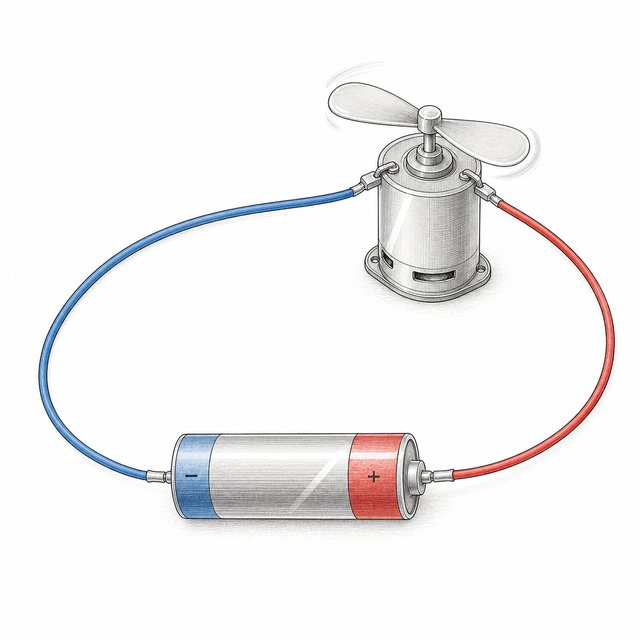
理科の図版
器具の形・実験の手順まで、教科書の単元に合わせて検品した線画。
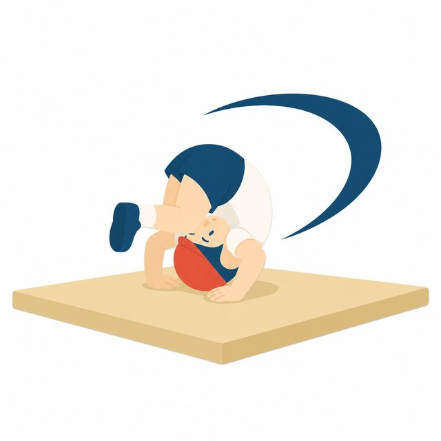
体育の学習カード
全領域・低中高学年別の学習カードと挿絵。
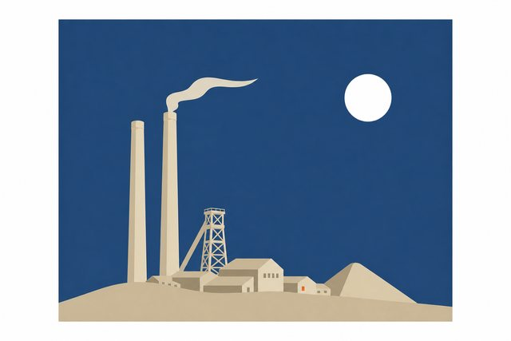
地域学習（筑豊）
地域教材の挿絵。ふるさと学習のプリントや掲示に。
学校だより専用セット
題字の飾り枠、月ラベル12ヶ月、季節のワンポイント、安全指導のカット。全国の学校だよりを調べて、いちばん使われている場面から作ります。
For Boards of Education
教育委員会の方へ。
管内の学校への紹介は歓迎です。リンクの掲載も、校内研修での配布も、ご自由にどうぞ。素材の利用条件は各素材のページと利用規約に明記しています。
棚にない素材が必要なときは、個別の制作のご相談もメールでお受けしています。「この場面の絵がほしい」を、学校の言葉のままお送りください。
学校だよりと著作権、生成AIの取り扱いを一度整理しておきたい、という場合は、教職員向け研修のご相談もお受けしています（LiFE with）。
お問い合わせ
School Stock（スクールストック）
EdtechChikuho@gmail.com
個別の素材制作のご相談・研修のご相談もこちらへ。
FAQ
よくある質問。
- 費用はかかりますか。
- かかりません。学校・園・教育委員会の教育活動で、無料でお使いいただけます。
- 学校だよりをホームページに載せても大丈夫ですか。
- 大丈夫です。おたよりへの掲載も、そのおたよりをホームページで公開することも、利用規約に「できること」として書いてあります。
- トリミングや文字入れなどの加工はできますか。
- できます。おたよりづくりに必要な加工はご自由にどうぞ。素材そのものを配り直したり売ったりすることだけ、ご遠慮ください。
- クレジット（出典）の表記は必要ですか。
- 不要です。書いていただける場合は「School Stock」とご紹介ください。
- 生成AIで作った素材はありますか。
- あります。どの素材がどんな工程で作られたかは棚に明記しています。文部科学省のガイドラインの考え方に沿って、出どころを明らかにする方針です。
- ほしい素材がないときは。
- メールでリクエストしてください。学校現場の「この場面の絵がない」を優先して作っています。